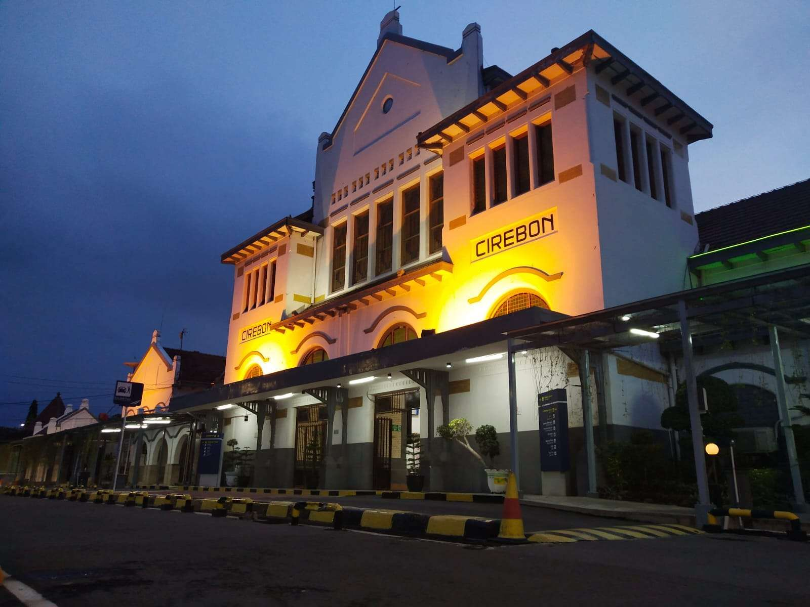

02 / MY LOVELY HOMETOWN
Cirebon

MY CITY
Little City with Abundant Culture
Cirebon is a city in West Java Province, Indonesia. It is located on the north coast of Java, known as the Pantura (North Coast) route, connecting Jakarta, Cirebon, Semarang, and Surabaya. Cirebon originally came from the word sarumban, a small hamlet founded by Ki Gedeng Tapa. Over time, Cirebon developed into a bustling village, later named Caruban (carub in Cirebonese means united). It was given this name because of the mix of immigrants from various nations, including Sundanese, Javanese, Chinese, and Arab cultural elements), religions, languages, and customs. Later, the pronunciation of the word caruban changed again to carbon and then cerbon. Besides the naming factor of the place, the use of the word Cirebon is also due to the fact that since the beginning, the livelihood of the majority of the community was fishing. Therefore, the work of catching fish and rebon (small shrimp) developed along the coast, as well as the production of shrimp paste, petis (shrimp paste), and salt. From the term used to make shrimp paste or what in Cirebonese is called (belendrang) , which is made from the residue of processing rebon shrimp, the term cai-rebon (Sundanese: air rebon) developed, which later became Cirebon.
Cirebon is known as the Shrimp City and the City of Saints. It is also known as Caruban Nagari (a marker for Mount Ceremai) and Grage (Negeri Gede in Cirebon, meaning a vast kingdom). As a cultural melting pot of Javanese, Sundanese, Arab, Chinese, and European settlers centuries ago, the people of Cirebon have adopted vocabulary from these languages into their Cirebonese dialect. For example, the word "Murad" (meaning "stacked") (a loanword from Arabic), "taocang" (a Chinese loanword), and "sonder" (meaning "without") (a European loanword).
(source:investasi.jabarprov.go.id)
FUNFACT
A Funfact
Cirebon has its own local language called Cirebonese (Bahasa Cirebon). Besides Cirebonese, some people in Cirebon also speak Sundanese and Javanese, including the Ngapak dialect. This variety of languages shows the rich cultural and historical diversity of Cirebon.